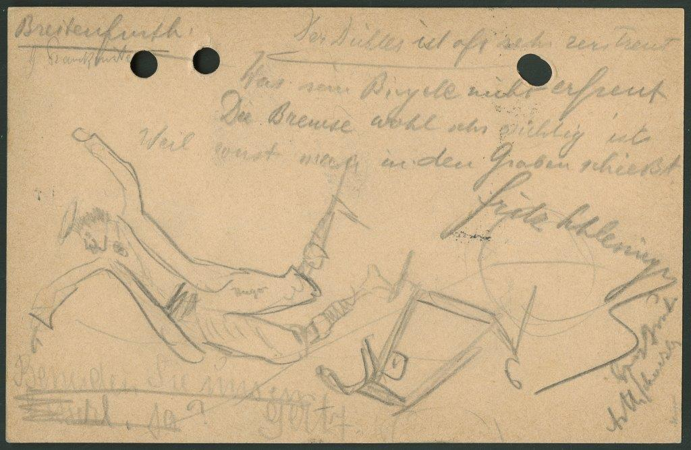

Der Dichter ist oft sehr zerstreut
Was sein Bicycle nicht erfreut
Die Bremse wohl sehr wichtig ist
Weil sonst man in den Graben schießt. Hugo
Fritz Schlesinger
G Franckenstein
Beneiden Sie uns ein bisserl, ja?
Gerty
HerzGruss
ArthSchnitzler